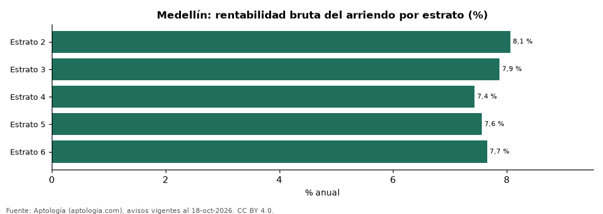

Rentabilidad del arriendo en Medellín por estrato: en cuál rinde más comprar para arrendar (octubre 2026)
Estudio con datos abiertos (CC BY 4.0). Versión original: https://www.aptologia.com/estudios/rentabilidad-arriendo-por-estrato-medellin-2026 · DOI: 10.5281/zenodo.23519067
En Medellín, comprar un apartamento para arrendarlo rinde más en estrato 2 (8,1 % bruto al año, 12,4 años de arriendo) y menos en estrato 4 (7,4 %).
Resumen: comparamos el precio por m² de 19.592 apartamentos en venta con el canon por m² de 19.946 en arriendo en Medellín, estrato por estrato.
Actualizado: 18 de octubre de 2026 (datos del 18 de octubre de 2026) · Próxima actualización: mensual.

Resumen
| Indicador | Valor |
|---|---|
| Estrato 2 | 8,1 % |
| Estrato 3 | 7,9 % |
| Estrato 4 | 7,4 % |
| Estrato 5 | 7,6 % |
| Estrato 6 | 7,7 % |
Rentabilidad bruta por estrato
| Estrato | Venta por m² | Arriendo por m² al mes | Rentabilidad bruta | Años de arriendo | Avisos (venta / arriendo) |
|---|---|---|---|---|---|
| 2 | 4,24 millones de pesos | 28.462 pesos | 8,1 % | 12,4 | 188 / 153 |
| 3 | 5,08 millones de pesos | 33.333 pesos | 7,9 % | 12,7 | 1.665 / 1.402 |
| 4 | 6,72 millones de pesos | 41.667 pesos | 7,4 % | 13,4 | 3.589 / 2.961 |
| 5 | 7,40 millones de pesos | 46.667 pesos | 7,6 % | 13,2 | 5.813 / 5.230 |
| 6 | 8,65 millones de pesos | 55.147 pesos | 7,7 % | 13,1 | 8.337 / 10.200 |
Canon mediano por m² × 12 ÷ precio mediano por m²; antes de administración, impuestos, vacancia y financiación.
Preguntas frecuentes
¿En qué estrato rinde más arrendar en Medellín? En estrato 2: 8,1 % bruto anual (octubre de 2026).
¿Dónde rinde menos? En estrato 4: 7,4 %.
Metodología
- Fuente: exportes nocturnos de la base de datos de Aptología (aptologia.com) del 18 de octubre de 2026: avisos vigentes de vivienda en portales inmobiliarios de 13 países, recogidos por Aptología y vistos en línea entre el 11 y el 18 de octubre de 2026. Corte: 18 de octubre de 2026.
- Depuración: se eliminan duplicados exactos (misma ciudad, zona, tipo, precio, moneda, área, habitaciones y baños) y los precios fuera del percentil 1–99 de cada país, operación, moneda y tipo; el precio por m² usa solo avisos con área declarada entre 12 y 2.000 m² y también se recorta al P1–P99.
- Qué se mide: precios pedidos (publicados), no precios de cierre. En arriendo, el canon mensual sin administración, gastos comunes ni condominio.
- Muestra mínima: cada cifra publicada se apoya en al menos 30 avisos; las celdas con menos se omiten.
- Colombia: Precios en pesos colombianos, sin conversión de moneda.
- Rentabilidad por estrato: canon mediano por m² × 12 ÷ precio de venta mediano por m² de apartamentos del mismo estrato; solo estratos con 30 avisos o más de venta y 30 o más de arriendo con área.
- Cordura: solo se publica si todas las rentabilidades están entre 1 % y 20 %.
- Limitaciones: la cobertura depende de los portales que recorre Aptología en cada país y es mayor en las ciudades grandes y en los segmentos medio-alto y alto; el área es la que declara el aviso, sin verificar; los nombres de zona vienen de los portales.
- Privacidad: solo se publican agregados; no se publica ningún dato personal, enlace a avisos ni nombre de anunciante.
- Datos abiertos: datos.csv, licencia CC BY 4.0.
Cómo citar
Pinzón Pineda, D. M. (2026). Rentabilidad del arriendo en Medellín por estrato: en cuál rinde más comprar para arrendar (octubre 2026). Aptología (aptologia.com). https://github.com/elbroker/aptologia-datos/tree/main/estudios/rentabilidad-arriendo-por-estrato-medellin-2026. Datos: datos.csv, licencia CC BY 4.0.